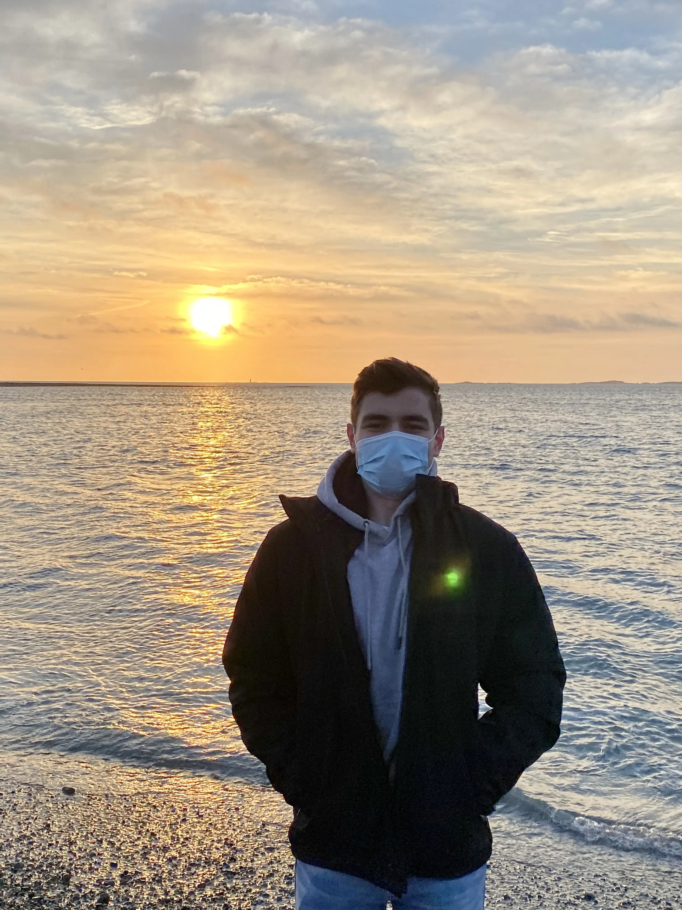

A b o u t M e
I was born and raised in Washington D.C. where I attended Maret School from fourth grade through senior year. There I cultivated my passions for aerospace engineering and history. I then matriculated at Harvard College where I have pursued my interests spanning engineering and technology, as well as history and politics.